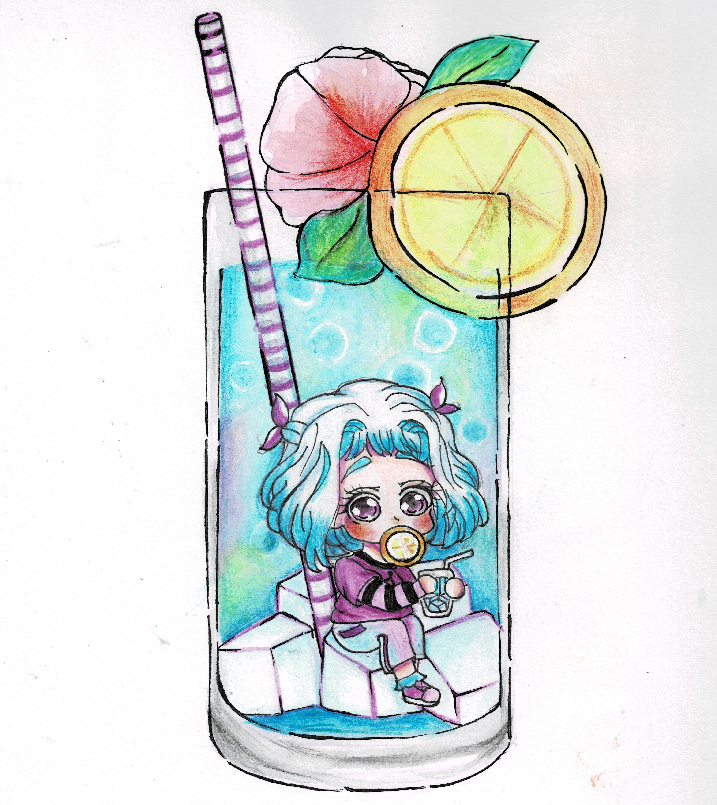
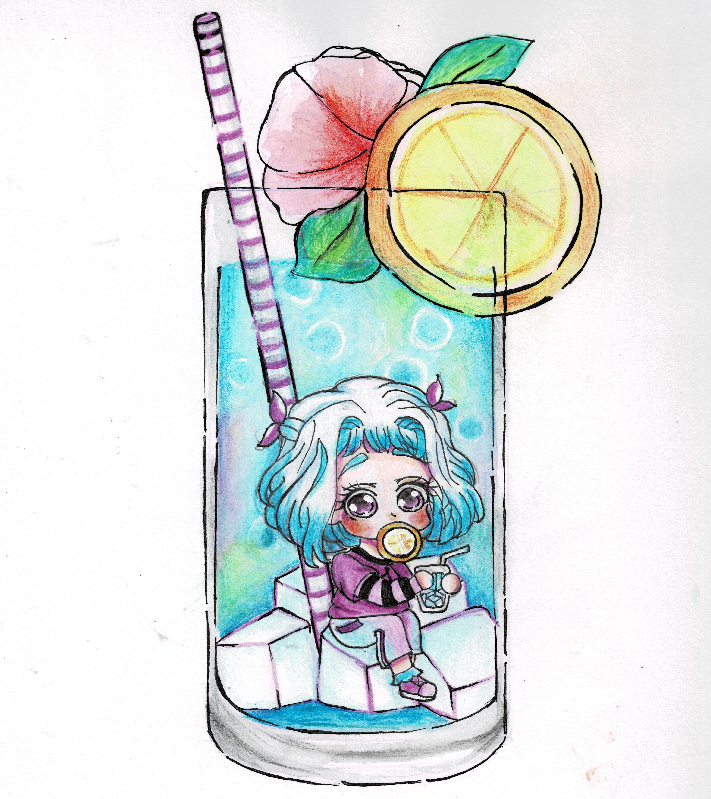
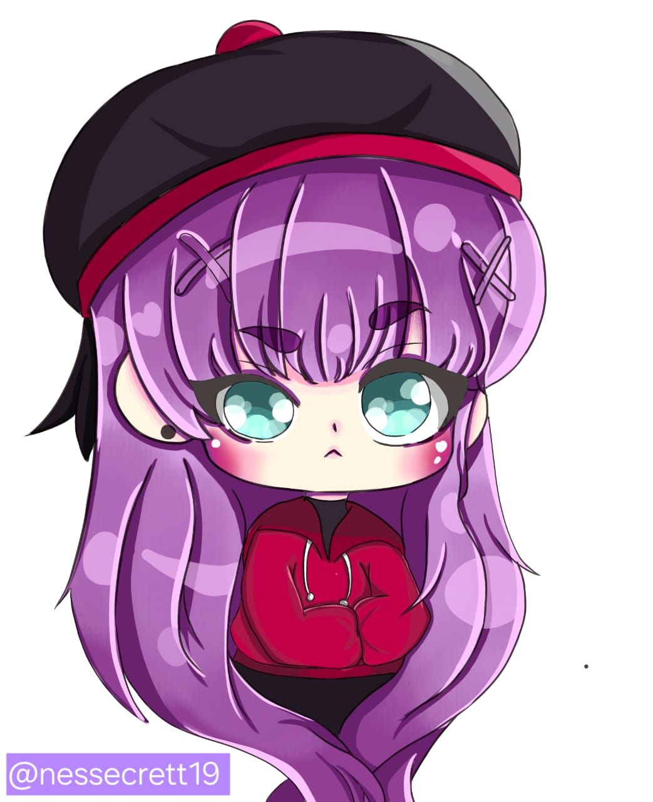
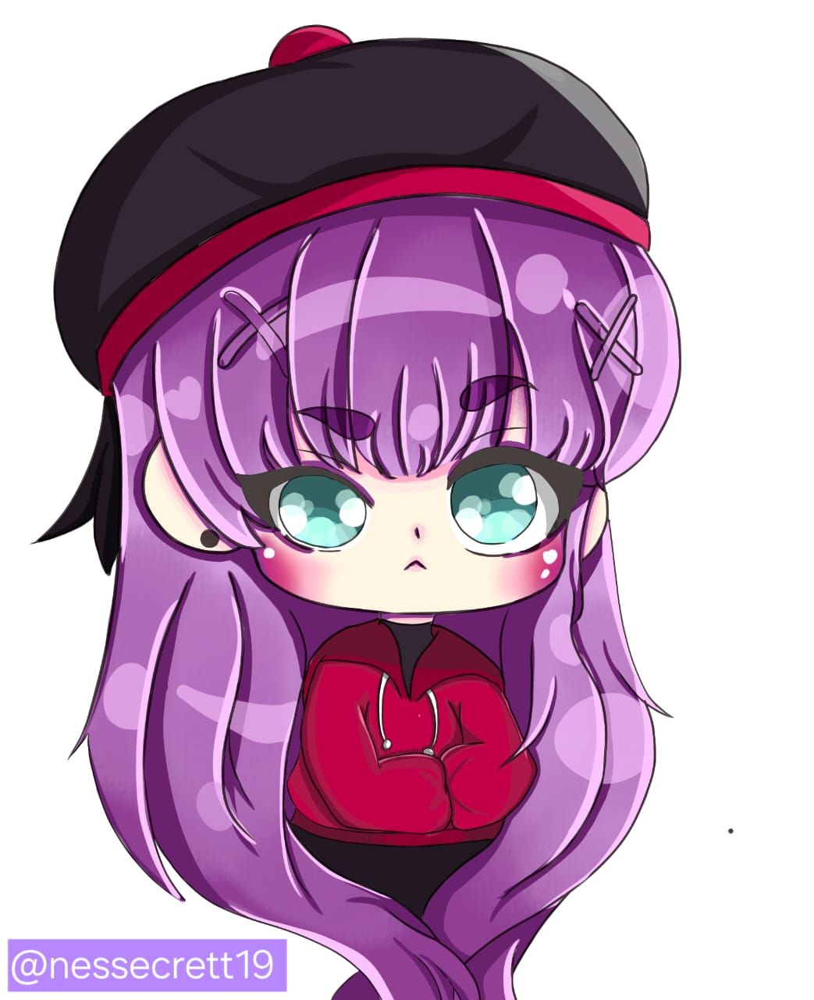

Primeros dibujos
Mi estilo de dibujo siempre ha estado orientado al anime, debido a que este fue el detonante que me motivó a dibujar. Al principio solamente quería recrear el estilo que veía en las series animadas, dibujar a mis personaje favoritos y tenerlos plasmados en papel. No utilizaba materiales caros (hasta la fecha) ni mucho menos libretas especializadas para ello. Aprendí a sacar provecho de lo que tenía a la mano y poco a poco perder el miedo a crear mis propias obras, dejando de calcar ya que si bien calcar puede ser útil para aprender a dibujar, es importante no abusar de ello. Agregando un poco más de color a mis obras durante el proceso.

Personajes propios
Con el paso del tiempo, comencé a crear mis propios OC's (Original Characters), personajes originales que le dieron más vida a mis dibujos definiendo sus personalidades e historias en mi propio universo.


Dibujos a lápiz
Hay ocasiones en las que me gusta hacer uso solamente de grafito para dibujar, porque su simplicidad me transmite calma y me ayuda a concentrarme en la forma sin distraerme con el color. Aun me falta mucho por aprender sobre esta técnica, pero disfruto dibujando de esta manera.

Bocetos
Hay ocasiones donde realizo dibujos rápidamente o me da pereza agregar lineart y color, así que simplemente los dejo como bocetos, en espera de que algún día puedan ser terminados.
Chibis
Mi estilo característico no son los personajes realistas de cuerpo completo, al contrario, una característica importante de mis dibujos es que suelo dibujar chibis, es decir, personajes con proporciones de 2 a tres cabezas.

 

Dibujos digitales
Después de años, incursioné en el arte digital, pasando de mis dibujos tradicionales (papel y lápiz) a dibujos digitalizados. El dibujo digital no es sencillo; es como volver a aprender a dibujar, a trazar sin temblar, a configurar pinceles, escoger el programa de dibujo más práctico y conocer cada una de sus herramientas. Aunque al principio fue frustrante, con el tiempo descubrí que ofrece posibilidades infinitas para experimentar con estilos, colores y efectos que en el papel serían mucho más complejos de lograr.

 

Evolución
Finalmente, presento un medidor en mi evolución como dibujante a lo largo de los años, elaborando el mismo dibujo en diferentes etapas de mi vida. Es verdad que aún me faltan muchas cosas que aprender, sin embargo, estoy orgullosa de lo que he logrado durante este tiempo y sigo disfrutando de este hobbie.


SI bien mi estilo de dibujo ha ido variando con el paso del tiempo, he comenzado a encontrar mi propio estilo, sobre todo, buscando la simplicidad en ellos.